WinUI reference: For the full property surface and design guidance, see Motion.
Microsoft.UI.Reactor (Reactor) exposes four animation systems and one rule about which to pick.
The rule first: the compositor can only animate five properties —
Opacity, Offset (Translation), Scale, Rotation, and CenterPoint — and
when it does, the managed render thread is not involved and the
animation runs at display refresh on the GPU. Everything that animates
those five properties (implicit transitions like .OpacityTransition(),
.Animate() for persistent implicit, .WithAnimation() for an event-
scoped batch, .Transition() for enter/exit, .InteractionStates()
for hover/press/focus, .Keyframes() for multi-step) is the same
underlying pipeline at different ergonomics. The other three systems
exist for things outside that ceiling: .LayoutAnimation() animates
position changes from layout reflow (a sibling was added, the panel
re-measured), .ConnectedAnimation() snapshots an element on unmount
and plays the snapshot into the matching element on mount, and the
WinUI Storyboard (reachable through .Set(...)) covers the rare
properties none of the above can touch. Read Compositor animation
first if you're picking between .Animate() and .WithAnimation(),
or Choreography if you're trying to sequence steps.
Animation¶
Reactor animations are declarative. You set the target value (opacity, scale, translation) and attach a transition modifier. When the value changes on the next render — driven by hooks and state — WinUI animates from the old value to the new one automatically.
Reference¶
| API | Animates | Trigger | Use when |
|---|---|---|---|
.OpacityTransition(duration?) |
Opacity | Implicit, on every change | Show/hide a single element. |
.ScaleTransition(transition?) |
Scale | Implicit, on every change | Element resize feedback. |
.TranslationTransition(transition?) |
Translation (offset) | Implicit, on every change | Slide a single element. |
.RotationTransition(duration?) |
Rotation | Implicit, on every change | Spin a single element. |
.BackgroundTransition(duration?) |
Background brush | Implicit; panels only | Color transitions on Grid / Stack. |
.Animate(curve, props?) |
Any compositor property | Implicit, persistent | One curve for every change to this element. |
AnimationScope.WithAnimation(curve, action) |
Compositor properties changed inside the action | Event-scoped | One state change drives a batched animation. |
.Transition(t, curve?) |
Enter / exit | When element enters or leaves the tree | Animate When(...) / ternary mount and unmount. |
.InteractionStates(builder, curve?) |
Compositor properties per state | Hover / press / focus | Zero-reconcile pointer-state feedback. |
.Keyframes(name, trigger, builder) |
Compositor properties at progress points | When trigger changes |
Multi-step animation (pulse, shake, breathe). |
.Stagger(delay, curve?) |
Container's children | Sibling cascade | Cascade enter/exit and layout animations across a list. |
.LayoutAnimation(duration?) / .SpringLayoutAnimation(...) |
Element position from layout reflow | Layout pass | Animate position changes a sibling caused. |
.ConnectedAnimation(key) |
Snapshot from old position to new | On unmount/mount of the same key | List-to-detail hero animations. |
AnimationScope.WithAnimationAsync(curve, action) |
Compositor properties changed inside the action | Event-scoped, returns Task | Sequence steps with await. |
Opacity Transition¶
.OpacityTransition() animates opacity changes. Set .Opacity() to your
target value and the transition handles the rest:
class OpacityDemo : Component
{
public override Element Render()
{
var (visible, setVisible) = UseState(true);
return VStack(12,
SubHeading("Opacity Transition"),
Button(visible ? "Fade Out" : "Fade In",
() => setVisible(!visible)),
TextBlock("This text fades in and out")
.FontSize(18).Bold()
.Opacity(visible ? 1.0 : 0.0)
.OpacityTransition(TimeSpan.FromMilliseconds(500))
).Padding(24);
}
}
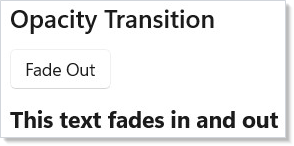
The optional TimeSpan parameter controls duration. The default is 300ms.
Use this for fade-in/fade-out on showing and hiding elements.
Scale Transition¶
.ScaleTransition() animates scale changes. Set .Scale() to the target
factor:
class ScaleDemo : Component
{
public override Element Render()
{
var (enlarged, setEnlarged) = UseState(false);
return VStack(12,
SubHeading("Scale Transition"),
Button(enlarged ? "Shrink" : "Enlarge",
() => setEnlarged(!enlarged)),
Border(
TextBlock("Scales up and down").FontSize(18).Bold()
).Padding(12)
.CornerRadius(8)
.Background("#e8e8e8")
.ScaleTransition()
).Padding(24);
}
}
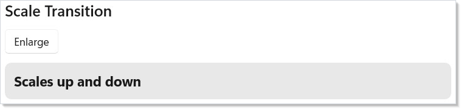
Scale uses the element's center as the transform origin. A value of 1.0f is
normal size, 1.5f is 150%. You can pass a custom Vector3Transition to
control which axes animate.
Translation Transition¶
.TranslationTransition() animates position offsets. Set .Translation()
to the target X, Y, Z offset in pixels:
class TranslationDemo : Component
{
public override Element Render()
{
var (moved, setMoved) = UseState(false);
return VStack(12,
SubHeading("Translation Transition"),
Button(moved ? "Slide Back" : "Slide Right",
() => setMoved(!moved)),
TextBlock("Slides horizontally")
.FontSize(18).Bold()
.Translation(moved ? 120f : 0f, 0f, 0f)
.TranslationTransition()
).Padding(24);
}
}
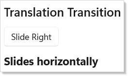
Translation offsets are relative to the element's layout position. Positive X moves right, positive Y moves down. The element still occupies its original layout space — only the visual position changes.
Background Transition¶
.BackgroundTransition() animates background color changes on VStack,
HStack, and Grid elements:
class BackgroundDemo : Component
{
public override Element Render()
{
var (warm, setWarm) = UseState(false);
return VStack(12,
SubHeading("Background Transition"),
Button(warm ? "Cool Colors" : "Warm Colors",
() => setWarm(!warm)),
VStack(8,
TextBlock("Background animates between colors")
.Foreground("#ffffff").Bold()
).Padding(16)
.CornerRadius(8)
.Background(warm ? "#da3b01" : "#0078d4")
.BackgroundTransition(TimeSpan.FromMilliseconds(600))
).Padding(24);
}
}
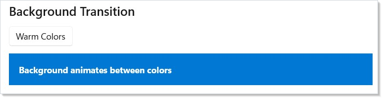
Background transitions use WinUI's BrushTransition. They only work on
panel elements (StackPanel, Grid) because WinUI restricts
BackgroundTransition to those types.
Combining Transitions¶
You can chain multiple transition modifiers on a single element. Each property animates independently:
class CombinedDemo : Component
{
public override Element Render()
{
var (active, setActive) = UseState(false);
return VStack(12,
SubHeading("Combined Transitions"),
Button(active ? "Reset" : "Animate",
() => setActive(!active)),
Border(
TextBlock("All at once").FontSize(16).Bold()
.Foreground("#ffffff")
).Padding(16)
.CornerRadius(8)
.Background("#7b2ab5")
.Opacity(active ? 1.0 : 0.4)
.Translation(active ? 40f : 0f, 0f, 0f)
.OpacityTransition(TimeSpan.FromMilliseconds(400))
.TranslationTransition()
).Padding(24);
}
}
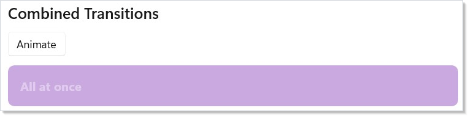
Each transition modifier is independent — .OpacityTransition() animates
opacity while .ScaleTransition() animates scale simultaneously. Set the
target values (.Opacity(), .Scale(), .Translation()) and the
transitions handle the animation for each property in parallel.
Layout Animation¶
.LayoutAnimation() animates elements when their position changes due to
layout reflow — items entering, leaving, or reordering in a collection:
class LayoutAnimationDemo : Component
{
public override Element Render()
{
var (items, updateItems) = UseReducer(
new List<string> { "Apple", "Banana", "Cherry" });
var nextId = UseRef(3);
return VStack(12,
SubHeading("Layout Animation"),
HStack(8,
Button("Add Item", () => {
nextId.Current++;
updateItems(l => [.. l, $"Item {nextId.Current}"]);
}),
Button("Remove Last", () => updateItems(l =>
l.Count > 0 ? l.Take(l.Count - 1).ToList() : l))
),
VStack(4, items.Select(item =>
TextBlock(item).Padding(horizontal: 8, vertical: 12).Background("#f0f0f0")
.CornerRadius(4).LayoutAnimation()
.WithKey($"item-{item}")
).ToArray())
).Padding(24);
}
}
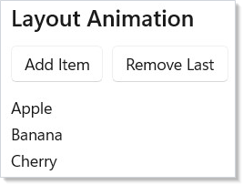
Layout animation works at the Composition layer. When WinUI repositions an
element (e.g., a sibling is added or removed), Reactor animates from the old
position to the new one. Use .WithKey() on each element so the reconciler
can track identity across reorders.
You can also use .LayoutAnimation(TimeSpan) for a custom duration or
.SpringLayoutAnimation() for a bouncy feel.
Connected Animation¶
.ConnectedAnimation(key) creates a visual continuity effect between two
views. When an element with a key is unmounted and another with the same key
is mounted, WinUI animates a snapshot from the old position to the new one:
class ConnectedAnimationDemo : Component
{
public override Element Render()
{
var (selected, setSelected) = UseState<string?>(null);
if (selected is not null)
return VStack(12,
Button("Back to list", () => setSelected(null)),
TextBlock(selected)
.FontSize(28).Bold()
.ConnectedAnimation($"title-{selected}")
).Padding(24);
var items = new[] { "Photos", "Music", "Videos" };
return VStack(12,
SubHeading("Connected Animation"),
VStack(4,
items.Select(item =>
Button(item, () => setSelected(item))
.ConnectedAnimation($"title-{item}")
).ToArray()
)
).Padding(24);
}
}
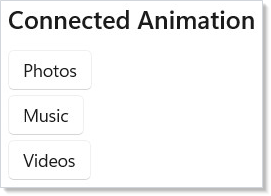
Both the source and destination elements must use the same key string. The animation runs automatically when the reconciler detects the transition. Use connected animations for list-to-detail navigation where an element "flies" from the list into the detail view.
Transactional animation — Animations.Animate(...)¶
Animations.Animate(kind, action) is Reactor's SwiftUI-style transactional
animation primitive. Wrap a state mutation, and any structural change to
a keyed list (insert, move, remove) that comes out of that mutation picks up
the kind — without a per-element modifier in sight.
class TodoList : Component
{
public override Element Render()
{
var (items, setItems) = UseState<IReadOnlyList<Todo>>(_seed);
return VStack(12,
Button("Add", () =>
Animations.Animate(AnimationKind.Spring, () =>
setItems([.. items, new Todo(Guid.NewGuid().ToString(), "New")]))),
ListView<Todo>(items, (t, _) => TextBlock(t.Title).Padding(8))
.Height(400)
);
}
}
AnimationKind is the declarative knob — Spring, EaseIn, EaseOut,
EaseInOut, Default, or None. The kind flows through an AsyncLocal
ambient: a setter invoked inside Animate snapshots the ambient before
queuing the render, and the reconciler re-pushes the snapshot around the
diff pass so ListView, GridView, LazyVStack (and hand-built
FlexColumn(items.Select(...).WithKey(...)) children) all animate the
resulting insert / move / remove. (See spec 042 §6.)
What Animate does not do¶
Animate is scoped to structural changes. A leaf TextBlock whose
Foreground changes inside Animate(.Spring) does not animate the
foreground — that remains the job of per-element modifiers like
.WithImplicitTransition(...) or
AnimationScope.WithAnimation(...). The two
channels are deliberately independent so the SwiftUI "withAnimation only
animates layout-shape ops" contract holds; conflating them would surprise
users coming from that mental model.
Per-element animation modifiers continue to win when set: declaring
.Transition(Fade) on a row makes that row's enter / exit use Fade
regardless of the ambient. The ambient is a default for the transactional
case, not a hammer for every change.
Nesting and explicit suppression¶
Nested Animate calls stack like using blocks — the inner kind wins for
state changes inside its scope, and the outer kind resumes after:
Animations.Animate(AnimationKind.Spring, () =>
{
// Insert: animates with Spring.
setItems([.. items, x]);
Animations.Animate(AnimationKind.None, () =>
{
// Insert inside None: no animation, even though we're still inside
// an outer Spring transaction. Useful when a child component needs
// to opt out of the caller's implicit animation intent.
setOtherItems([.. others, y]);
});
});
Reduced motion¶
Animate respects the system's reduced-motion preference at the call
site. Read UseReducedMotion() and skip the wrapper when the user has
opted out:
var reduceMotion = UseReducedMotion();
Action commit = () => setItems([.. items, x]);
if (reduceMotion) commit();
else Animations.Animate(AnimationKind.Spring, commit);
WithAnimation Scope¶
AnimationScope.WithAnimation() wraps a state change so that every
compositor property modified during the scope animates with the given curve.
Call it inside a button handler or effect:
class WithAnimationDemo : Component
{
public override Element Render()
{
var (opacity, setOpacity) = UseState(1.0);
return VStack(12,
SubHeading("WithAnimation Scope"),
Button(opacity > 0.5 ? "Fade Out" : "Fade In", () =>
{
Microsoft.UI.Reactor.Animation.AnimationScope.WithAnimation(
Microsoft.UI.Reactor.Animation.Curve.Ease(300, Microsoft.UI.Reactor.Animation.Easing.Decelerate), () =>
{
setOpacity(opacity > 0.5 ? 0.2 : 1.0);
});
}),
TextBlock("Compositor-animated via WithAnimation scope")
.FontSize(18).Bold()
.Opacity(opacity)
).Padding(24);
}
}
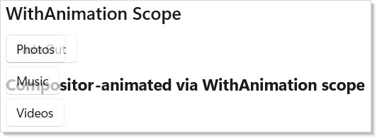
WithAnimation captures the curve, triggers the state change, and any
.Opacity(), .Scale(), .Translation(), or .Rotation() values that
change during the render animate on the compositor thread. The managed
render completes instantly — animation runs on the GPU.
Caveat:
AnimationScopestores its current curve in a[ThreadStatic]field, so the ambient scope is alive only on the call stack that opened it. The classic failure:WithAnimation(Curve.Spring(), async () => { await Task.Delay(100); setVisible(false); }). ThesetVisibleafter theawaitruns with no ambient scope — the continuation is a fresh stack frame and[ThreadStatic]is empty — and the property change applies instantly with no animation. For sequenced animation,WithAnimationAsync(which uses aCompositionScopedBatchand returns a task) is the right shape, notawaitinsideWithAnimation. The framework's render host uses internalPushScope/PopScopecalls to re-establish the scope across its own async boundaries; user code does not have that hook.
.Animate() Modifier¶
.Animate(curve) attaches a persistent implicit animation to an element.
Every time a compositor property changes (opacity, offset, scale, rotation),
it animates with the given curve — no scope needed:
class AnimateDemo : Component
{
public override Element Render()
{
var (active, setActive) = UseState(false);
return VStack(12,
SubHeading(".Animate() Modifier"),
Button(active ? "Reset" : "Animate", () => setActive(!active)),
Border(
TextBlock("Spring-animated").FontSize(18).Bold()
).Padding(12).CornerRadius(8).Background("#e8e8e8")
.Opacity(active ? 0.5 : 1.0)
.Animate(Microsoft.UI.Reactor.Animation.Curve.Spring(0.65f))
).Padding(24);
}
}
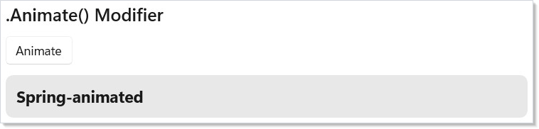
Pass a Curve.Spring() for a bouncy feel or Curve.Ease(ms) for a timed
ease. You can restrict which properties animate with the AnimateProperty
flags: .Animate(Curve.Spring(), AnimateProperty.Opacity | AnimateProperty.Scale).
The compositor ceiling is Opacity | Offset | Scale | Rotation |
CenterPoint — anything outside that flag set (Width, Height, layout
slot, brush) is not covered by .Animate(). Use .LayoutAnimation()
for size changes driven by layout, or fall through to a WinUI
Storyboard via .Set(...) for the unusual property.
Interaction States¶
.InteractionStates() applies hover, press, and focus effects at the
compositor layer with zero reconciles. The visual feedback runs entirely on
the GPU — Reactor's render loop is never involved:
class InteractionStatesDemo : Component
{
public override Element Render()
{
return VStack(12,
SubHeading("InteractionStates"),
TextBlock("Hover and press — zero reconcile, compositor-driven."),
HStack(12,
Border(
TextBlock("Hover me").FontSize(16).Bold()
.HAlign(HorizontalAlignment.Center).VAlign(VerticalAlignment.Center)
).Padding(16).CornerRadius(8).Size(150, 60).Background("#50C878")
.InteractionStates(s => s
.PointerOver(opacity: 0.85f, scale: 1.05f)
.Pressed(scale: 0.95f, opacity: 0.7f)),
Border(
TextBlock("Press me").FontSize(16).Bold()
.HAlign(HorizontalAlignment.Center).VAlign(VerticalAlignment.Center)
).Padding(16).CornerRadius(8).Size(150, 60).Background("#9B59B6")
.InteractionStates(s => s
.PointerOver(scale: 1.03f)
.Pressed(scale: 0.97f, opacity: 0.8f),
curve: Microsoft.UI.Reactor.Animation.Curve.Spring(0.5f))
)
).Padding(24);
}
}
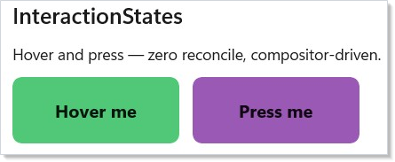
The builder supports .PointerOver(...), .Pressed(...), and
.Focused(...). Each accepts optional opacity, scale, translation,
rotation, background, foreground, and borderBrush parameters. Pass
a curve: parameter for spring or ease transitions between states.
Enter/Exit Transitions¶
.Transition() animates an element when it enters or leaves the tree.
Combine transitions with + (parallel) and | (asymmetric enter/exit):
class TransitionDemo : Component
{
public override Element Render()
{
var (visible, setVisible) = UseState(true);
return VStack(12,
SubHeading("Enter/Exit Transition"),
Button(visible ? "Hide" : "Show", () => setVisible(!visible)),
visible
? Border(
TextBlock("Fade + Slide").FontSize(16).Bold()
.HAlign(HorizontalAlignment.Center).VAlign(VerticalAlignment.Center)
).Padding(12).CornerRadius(8).Size(200, 60).Background("#E74C3C")
.Transition(Microsoft.UI.Reactor.Animation.Transition.Fade + Microsoft.UI.Reactor.Animation.Transition.Slide(Microsoft.UI.Reactor.Animation.Edge.Bottom))
: (Element)TextBlock("(removed from tree)")
).Padding(24);
}
}
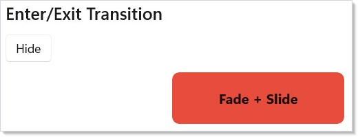
Built-in transitions:
| Transition | Effect |
|---|---|
Transition.Fade |
Fade in/out |
Transition.Slide(edge) |
Slide from an edge (Left, Top, Right, Bottom) |
Transition.Scale(from) |
Scale from a starting factor |
a + b |
Run both in parallel |
enter \| exit |
Different transitions for enter and exit |
The default curve is 300ms with Decelerate easing. Pass a custom Curve
as the second parameter to override.
Stagger¶
.Stagger(delay) on a container adds an incremental delay to each child's
enter transition and layout animation, creating a cascade effect:
class StaggerDemo : Component
{
public override Element Render()
{
var (items, setItems) = UseState(new[] { "One", "Two", "Three", "Four", "Five" });
return VStack(12,
SubHeading("Staggered Animation"),
Button("Shuffle", () => setItems(items.OrderBy(_ => Random.Shared.Next()).ToArray())),
VStack(4, items.Select(item =>
TextBlock(item).Padding(horizontal: 8, vertical: 12).Background("#f0f0f0")
.CornerRadius(4).LayoutAnimation()
.WithKey(item)
).ToArray()).Stagger(TimeSpan.FromMilliseconds(40))
).Padding(24);
}
}
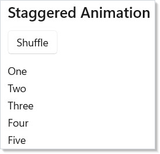
Each child's animation starts delay milliseconds after the previous one.
Combine with .LayoutAnimation() on each child and .WithKey() for smooth
reorder cascades.
Keyframes¶
.Keyframes(name, trigger, configure) runs a multi-property keyframe
animation whenever trigger changes. Define keyframes at progress points
from 0.0 to 1.0:
class KeyframeDemo : Component
{
public override Element Render()
{
var (count, setCount) = UseState(0);
return VStack(12,
SubHeading("Keyframe Animation"),
Button("Pulse!", () => setCount(count + 1)),
Border(
TextBlock("Pulse target").FontSize(16).Bold()
.HAlign(HorizontalAlignment.Center).VAlign(VerticalAlignment.Center)
).Padding(12).CornerRadius(8).Size(200, 60).Background("#9B59B6")
.Keyframes("pulse", count, kf => kf
.Duration(600)
.At(0.0f, scale: global::System.Numerics.Vector3.One)
.At(0.4f, scale: new global::System.Numerics.Vector3(1.3f, 1.3f, 1f), easing: Microsoft.UI.Reactor.Animation.Easing.Decelerate)
.At(0.7f, scale: new global::System.Numerics.Vector3(0.95f, 0.95f, 1f))
.At(1.0f, scale: global::System.Numerics.Vector3.One, easing: Microsoft.UI.Reactor.Animation.Easing.Accelerate))
).Padding(24);
}
}
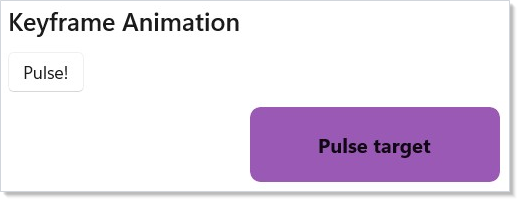
The builder supports .Duration(ms), .Loop() for infinite repeat, and
.At(progress, opacity?, scale?, translation?, rotation?, easing?) for
each keyframe. Keyframes run on the compositor — no managed-code
involvement during playback.
Choreography¶
AnimationScope.WithAnimationAsync() returns a Task that completes when
the compositor animation finishes. Chain multiple calls with await to
build sequenced animations:
class ChoreographyDemo : Component
{
public override Element Render()
{
var (phase, setPhase) = UseState(0);
return VStack(12,
SubHeading("Choreography (WithAnimationAsync)"),
Button("Run Sequence", async () =>
{
await Microsoft.UI.Reactor.Animation.AnimationScope.WithAnimationAsync(
Microsoft.UI.Reactor.Animation.Curve.Ease(200), () => setPhase(1));
await Microsoft.UI.Reactor.Animation.AnimationScope.WithAnimationAsync(
Microsoft.UI.Reactor.Animation.Curve.Spring(0.7f), () => setPhase(2));
}),
TextBlock($"Phase: {phase}").FontSize(18).Bold()
.Opacity(phase == 0 ? 1.0 : phase == 1 ? 0.3 : 1.0)
).Padding(24);
}
}
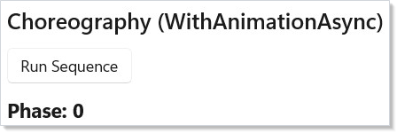
Each await waits for the CompositionScopedBatch to complete before
starting the next step. Use this for onboarding flows, multi-step reveals,
or any animation that must happen in order.
Patterns¶
Page enter/exit on route change¶
Wrap the route-mapped page in a .Transition(...) so each new page
slides or fades into view. Pair Transition.Slide(Edge.Right) |
Transition.Slide(Edge.Left) (asymmetric — enter from right, exit to
left) with NavigationTransition.None on the host so
the compositor animation runs without competing with the host's
default Slide. See Navigation for the route
plumbing.
Skeleton-to-content fade¶
When data is loading, render a skeleton element; when it arrives,
swap to the real content. Apply .Transition(Transition.Fade, Curve.Ease(150))
on the content element and the skeleton element separately so the
crossfade looks intentional rather than a hard pop. Combine with
UseResource for the pending-state plumbing.
Reorder list with stable identity¶
Layout animations need UseState updates that preserve
identity across reorders. Always set .WithKey($"item-{model.Id}")
on each list child — the reconciler matches keys to track which
element moved where, and .LayoutAnimation() reads the old → new
position from the matched element. Without keys the reconciler treats
the reorder as a destroy + create, and the animation falls back to a
fade because there is no "old position" to animate from.
Common Mistakes¶
Animating Width or Height with .Animate()¶
.Animate() only covers compositor properties: Opacity, Offset
(Translation), Scale, Rotation, CenterPoint. Width and Height are
layout properties; the compositor doesn't see them. The element will
snap from 200 to 400 with no animation. Two correct shapes: scale
instead (Scale(expanded ? 2 : 1) plus .ScaleTransition() — the
element renders at 200 and is visually 400), or animate via
.LayoutAnimation() if a sibling-driven layout pass is what's
changing the size.
Awaiting inside WithAnimation¶
// Don't:
AnimationScope.WithAnimation(Curve.Ease(300), async () =>
{
setStage("loading");
await api.SaveAsync();
setStage("done"); // No animation — scope is gone.
});
AnimationScope is [ThreadStatic]; the await continuation runs on
a different stack frame with an empty scope. The second setStage
runs unanimated. Use WithAnimationAsync (returns a Task tied to a
composition batch) and one curve per phase, or sequence two separate
WithAnimation calls between awaits.
Re-running keyframes on every render¶
.Keyframes re-runs whenever its trigger value changes. Passing a
value that changes every render (DateTime.Now, a freshly-allocated
list, an inline lambda) restarts the animation on every reconcile —
the element flickers as the keyframes constantly reset. Use a state
counter that increments only when you mean to retrigger
(var (count, updateCount) = UseReducer(0), then updateCount(c => c + 1)).
Tips¶
Keep durations short. 200--400ms feels responsive. Anything over 500ms feels sluggish. Use the default duration unless you have a specific reason.
Use .InteractionStates() for hover/press effects. It runs entirely on
the compositor with zero reconciles — far cheaper than tracking pointer
state in UseState and re-rendering.
Use .Transition() for conditional rendering. When an element enters or
leaves the tree via When() or ternary, .Transition() adds polish
without manual mount/unmount tracking.
Combine transitions sparingly. One or two transitions per element is natural. Three or more competing animations can feel chaotic.
Always set .WithKey() with layout animations. Without stable keys, the
reconciler cannot track which element moved where, and the animation falls
back to a simple fade.
Use Curve.Spring() for interactive feedback. Spring curves feel
natural for user-triggered animations. Use Curve.Ease() for timed,
non-interactive transitions.
Next Steps¶
- Localization — previous topic: translate strings, format numbers/dates, and support RTL layouts
- Charting — next topic: data visualization with line, bar, area, and pie charts
- Navigation — pair connected animations with page transitions
- Collections — animate list items as they enter, reorder, and leave
- Styling and Theming — combine animations with theme-aware colors
- Async Resources — pair compositor-batched animation with data load lifecycles